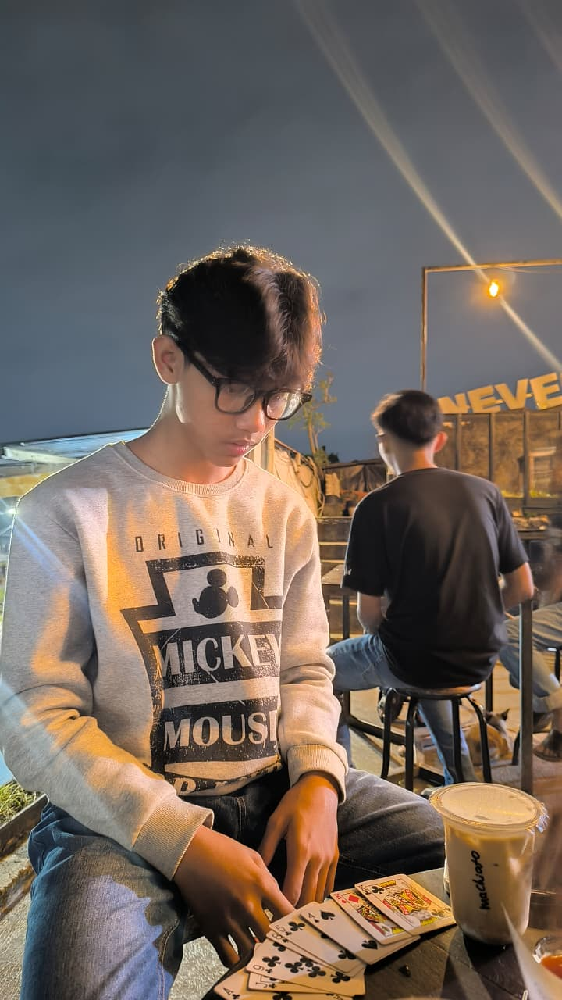

Halo, Saya Chaesar Panji Maulasantoss!!
Seorang pelajar yang antusias mempelajari Web Development.
Tentang Saya
Perkenalkan, nama saya Chaesar Panji Maulasantoss, dan biasa dipanggil kei. Saya adalah seorang pelajar yang memiliki minat besar pada dunia teknologi, khususnya di bidang pemrograman, pengembangan gim, dan kecerdasan buatan (Artificial Intelligence/AI). Saya merupakan pribadi yang memiliki rasa ingin tahu tinggi, senang mempelajari hal-hal baru, dan selalu berusaha mengembangkan kemampuan diri. Bagi saya, setiap pengalaman adalah kesempatan untuk belajar dan menjadi pribadi yang lebih baik. Saya percaya bahwa kesuksesan tidak hanya ditentukan oleh bakat, tetapi juga oleh kerja keras, disiplin, dan kemauan untuk terus belajar.
Pendidikan
Saat ini saya menempuh pendidikan di SMK Negeri 1 Nganjuk dengan jurusan Pengembangan Gim (Rekayasa Perangkat Lunak/RPL). Saya memilih jurusan ini karena memiliki ketertarikan yang besar terhadap dunia teknologi dan ingin mempelajari cara membuat aplikasi, website, maupun gim. Melalui pendidikan yang saya jalani, saya berharap dapat menguasai keterampilan pemrograman serta mampu menciptakan karya yang bermanfaat bagi banyak orang. Saya juga ingin terus meningkatkan kemampuan agar siap menghadapi perkembangan teknologi di masa depan.
Hobi
Di waktu luang, saya senang belajar pemrograman dan mengikuti perkembangan teknologi, terutama di bidang kecerdasan buatan (AI). Selain itu, saya memiliki hobi menabung dan mempelajari investasi sebagai langkah untuk membangun kebiasaan mengelola keuangan sejak usia muda. Saya juga menikmati menonton film, terutama film yang memiliki alur cerita yang saling berhubungan karena menurut saya cerita yang tersusun dengan baik memberikan pengalaman yang lebih menarik. Saya percaya bahwa setiap hobi yang saya tekuni dapat menambah wawasan, melatih cara berpikir, dan membantu saya berkembang menjadi pribadi yang lebih kreatif serta produktif.
Skill
Saya memiliki kemampuan dasar dalam pemrograman, seperti HTML, CSS, Python, serta terus mempelajari JavaScript dan teknologi lainnya. Saya juga mampu menggunakan komputer untuk membuat dokumen, presentasi, serta mencari dan mengolah informasi dari berbagai sumber. Selain keterampilan teknis, saya memiliki kemampuan belajar yang cepat, berpikir logis, disiplin dalam menyelesaikan tugas, serta mampu bekerja sama maupun belajar secara mandiri untuk meningkatkan kemampuan diri.
Mimpi
Saya bercita-cita menjadi seorang Software Engineer atau Game Developer yang mampu menciptakan aplikasi dan gim yang bermanfaat serta inovatif. Selain itu, saya ingin terus mengembangkan kemampuan di bidang teknologi dan kecerdasan buatan agar dapat bersaing di tingkat internasional. Saya juga memiliki impian untuk mencapai kebebasan finansial melalui kerja keras, pengembangan diri, dan investasi yang bijak, sehingga dapat membanggakan keluarga serta memberikan manfaat bagi masyarakat.
Kutipan Favorit
"The best investment you can make is in yourself." – Warren Buffett Kutipan tersebut menjadi sumber motivasi bagi saya untuk terus belajar, mengembangkan kemampuan, dan memperbaiki diri setiap hari. Saya percaya bahwa ilmu pengetahuan, keterampilan, dan karakter yang baik merupakan investasi terbaik yang akan memberikan manfaat dalam jangka panjang. Oleh karena itu, saya ingin terus meningkatkan kualitas diri melalui pendidikan, pengalaman, dan kerja keras agar dapat meraih cita-cita serta memberikan manfaat bagi orang lain di masa depan.
Proyek Saya
🌐 Website Portofolio
Website pribadi untuk menampilkan karya dan skill saya.
HTML CSS📋 Aplikasi To-Do List
Aplikasi sederhana untuk mencatat tugas harian.
JavaScriptLanding Page
Halaman promosi produk dengan desain modern.
HTML CSS